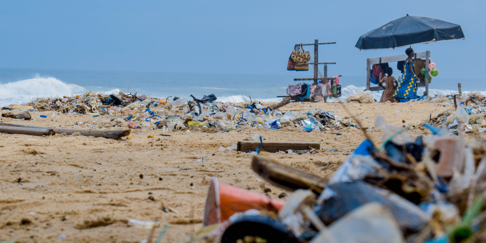
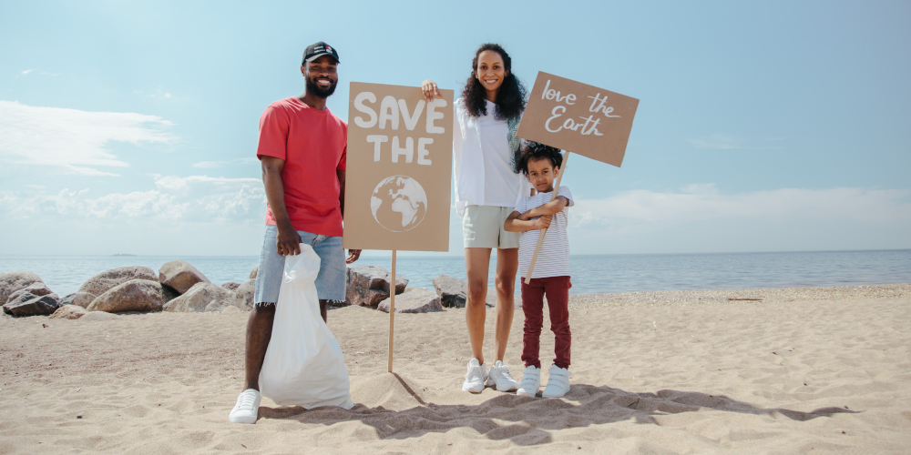
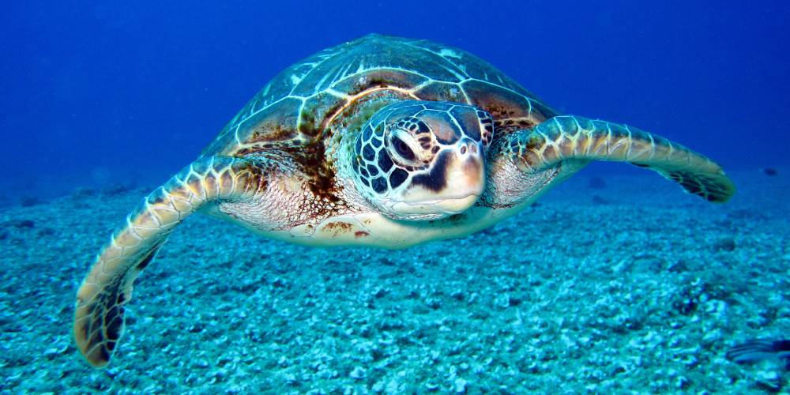

Como ajudar:
-

Se conscientize
A poluição é uma grande ameaça às tartarugas marinhas e a outros animais marinhos, afetando os ecossistemas em todo o mundo. Para ajudar a proteger essas criaturas fascinantes, é importante se conscientizar e tomar medidas para reduzir a poluição. Pequenas ações podem fazer uma grande diferença na preservação dos oceanos e na sobrevivência das tartarugas marinhas. Juntos, podemos ajudar a garantir um futuro sustentável e proteger a saúde dos nossos oceanos.
-

Seja um voluntário
O voluntariado é uma forma importante de ajudar a proteger as tartarugas marinhas e os oceanos. Os voluntários podem ter a oportunidade de monitorar praias, proteger ninhos de tartarugas, ajudar na reabilitação de tartarugas feridas, coletar dados e informações importantes e muito mais. Além disso, o voluntariado também pode ser uma oportunidade para aprender sobre a vida marinha e as ameaças que enfrentam. Venha fazer a diferença conosco.
-

Faça uma doação
Fazer uma doação para ajudar as tartarugas marinhas é uma forma de contribuir para a preservação da vida marinha e ajudar a garantir um futuro saudável para o planeta. Cada doação, independentemente do tamanho, pode ajudar a proteger as tartarugas marinhas. As doações são usadas para financiar uma variedade de atividades, como: monitoramento de praias, proteção de ninhos, reabilitação de tartarugas feridas e campanhas de conscientização pública.